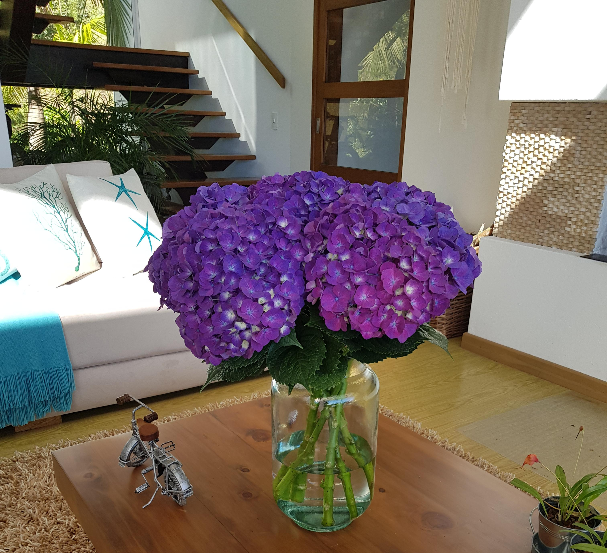
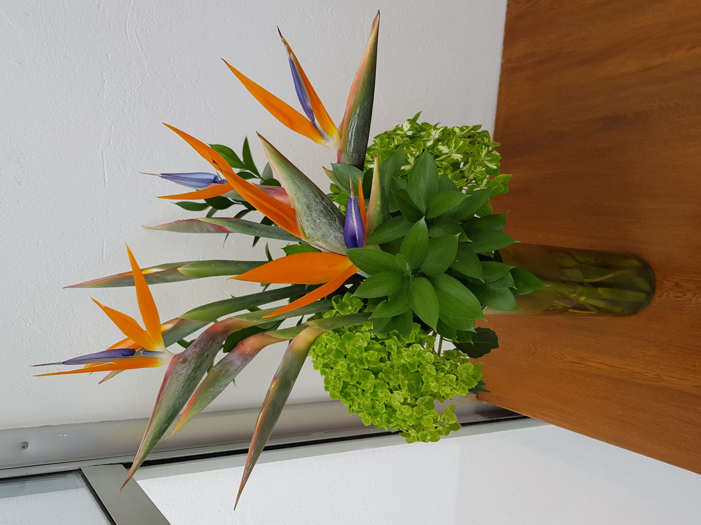

Product Care
The best tips to care after your flowers.

Cut Hydrangea Care
- Take off plastic sleeve.
- Cut stems at a 45 degree angle under water in a bucket.
- Leave them hydrating for 5 minutes.
- Place flowers in a clean vase.
- Mist petals with a spray with clean water every other day to avoid dehydration.
- Make sure the vase always has water above cut stem level.
- Change vase water and re-cut stems every 3 days.
- If any flower wilts, completely submerge the flower head in water and place it in the vase again. It will revive!
- Keep flowers out of direct sunlight and away from heat and drafts.

Bird-of-Paradise
Bird-of-Paradise is a special kind of flower, it has up to 3 consecutive blooms. When the first bloom has worn out, do not be afraid to tear it off; behind comes the other! It is a magical flower which will make your arrangements last longer than most other flowers.
Note, if the petals do not show for one or two days, try to open the natural overture on the top of the flower and slightly pull the orange petal just a little, to help it bloom.